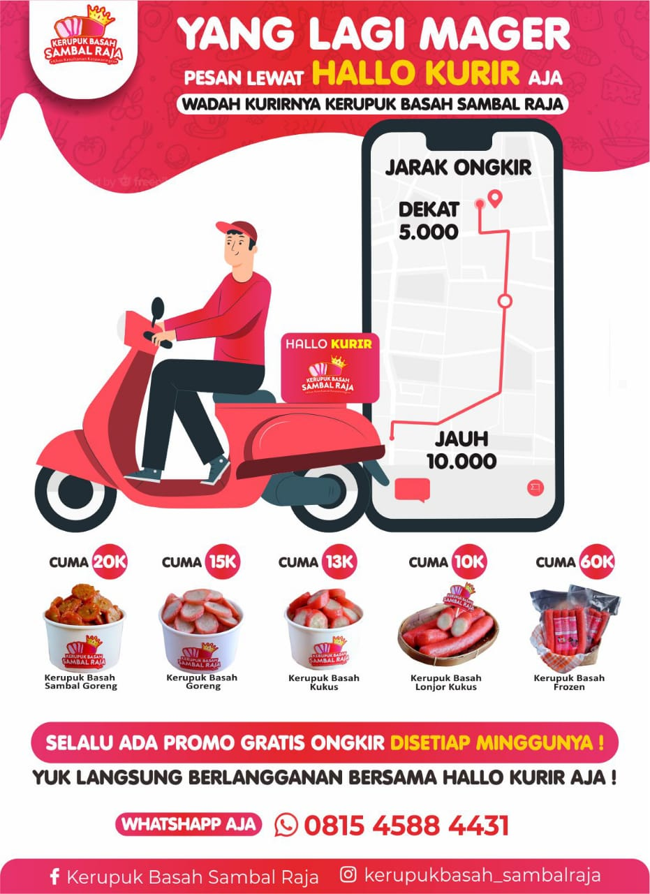

Pemesanan
Isi Form Pemesanan dengan Klik Tombol di bawah ini
PesanHallo kurir
 Yuk di Hallo Kurir AjaKomposisi kerupuk Basah
Bahan-Bahan :
- 1 Kg Daging ikan Arwan/ikan Belida segar
- 500 gr Tepung sagu/kanji putih
- 6 Siung bawang putih ditumbuk halus
- ½ Sdk mkn merica bubuk
- 3-4 Gelas air
- Garam secukupnya
- Vetsin/penyedap rasa secukupnya
Untuk Macam-macam Varian Beserta Harga :
- Kerupuk Basah Sambal Goreng
$ --> Harga : 20k - Kerupuk Basah Goreng
$ --> Harga : 15k - Kerupuk Basah Kukus
$ --> Harga : 13k - Kerupuk Basah Lonjor Kukus
$ --> Harga : 10k - Kerupuk Basah Frozen
$ --> Harga : 60k